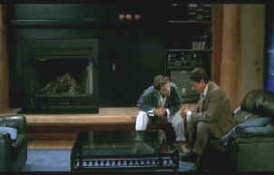

|
Love
and Death on Long Island/B,B |
|
Universal/1998/94m/ANA
1.85
|
What's
going on with Giles De' Ath? The fussy British writer has
recently lost his wife and continues in a sheltered scholarly life,
oblivious to the world around him. Giles prides himself on his
obliviousness to the modern world. In a rare radio interview,
Giles responds to a question about his chosen writing tool with
a self-assured "I'm a writer. I write. I don't process
words." But Giles De'Ath is about to break out in the most unexpected way. It all has
something to do with E. M. Forster and teen movies. Are you ready
to join Giles on a journey from domestic bliss to
incomprehensible longing?
|
 |
|
Script
pitch? ©Universal |
De'Ath begins his journey in London, detouring from the clubby
surroundings of his everyday life into local movie, and with
eyes wide chagrin watches the wrong film in a small two screen
house. Before long, Giles
pursues his new found obsession to the shores of backwater Long
Island, on the fringes of the Hamptons, where the best accommodations
he can find is a quickie motel. But this is one determined
writer, and he charms his way through every situation.
Director
Richard Kwietnieowski does an excellent job of moving the film
along at a crisp pace from his own screenplay. The photography
is relaxed, clean and unobtrusive. Don't expect laughing out
loud humor here, but a good smile is likely to remain on your
face for much of the film.
John
Hurt does wonders with the role of Giles De'Ath. Hurt's line
readings have marvelously droll inflections. Even the way he
stands or tilts his head quizzically works wonders with his
character. Hurt is charming without being smarmy and his way.
He's a traveler riding on his use of language. Jason
Priestly, playing actor Ronnie Bostock, makes a good foil
for the wit of John Hurt. Fiona Loewi is very charming as
Ronnie's girl Audrey, but perhaps a bit more subtlety of
expression would have extracted that last ounce of humor from
her role.
Love and Death on Long Island is
a reasonably sharp DVD. Some scenes have a slight softness in
finer detail, otherwise everything is consistently resolved. The
color tracks well, with a brightly saturated range. The only
bloom I noticed was on the red light of a traffic signal. There
is a slight persistent noise in the picture, possibly related to
film grain, but it does not come off that way. It is not very
intrusive, but it keeps this disc from getting a higher rating.
The Dolby Digital 2-channel sound in nicely matrixed and well
balanced. Surround information brings a nice ambiance tot he
outdoor scenes. |
The Feature
Archive has articles
ranging from John Ford to Blonde
Bimbos, The
Heistmasters, Akira
Kurosawa and Frank
Darabont.

Click on the image above to learn more about the effect of
an actor's voice on his screen persona.
Check out the Movie
Poster Archive
for short bios and images of Susan Hayward, Kirk Douglas,
Katharine Hepburn and many more. This month's featured star
is Clark
Gable.
Imaging
Science Foundation
The Imaging
Science Foundation promotes proper standards in home theater
viewing. ISF trained technicians offer monitor calibration
services to consumers. The difference in a properly
calibrated monitor can be astounding. Click on the image to find
an ISF member near you.
HOT
LINKS
DVD
Verdict
They
may be judgmental, but that's the point, isn't it. Lots of DVD
reviews plus news and more
The
Home Theater Forum
Looking for
lively and helpful exchanges on home theater, DVD, movies. Visit
this friendly site and get a hardy welcome.
Home
Theater Reference Reviewing System

When you read a DVD review it's of utmost importance to know
what equipment is being used to evaluate quality. Click on the
projector to find out more.
|